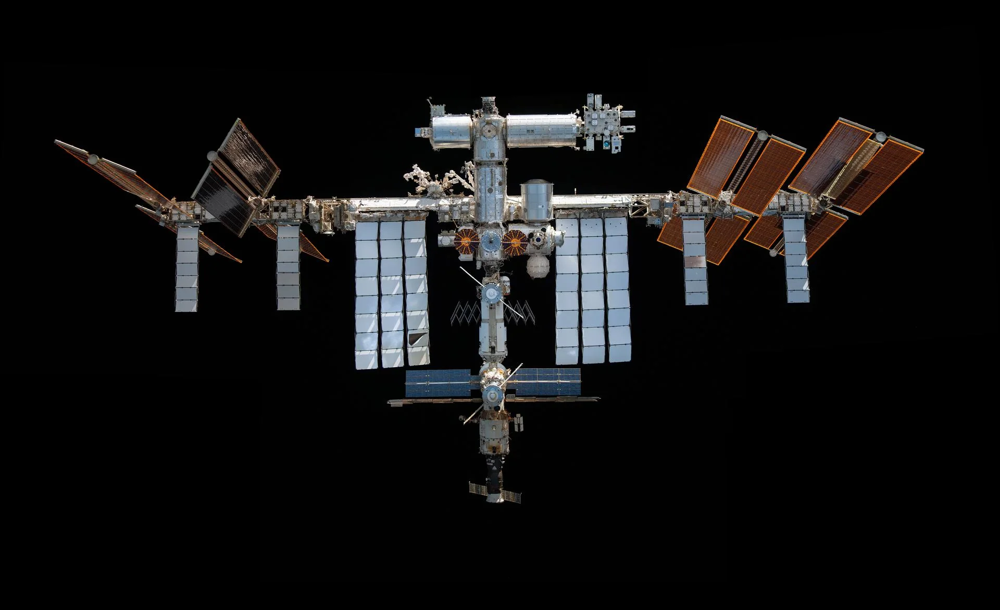

Brisbane summit doorway
The broader support-seeking site where the ISS preservation theme first sat beside civic AI, care, culture, health and eclipse readiness.
Open Brisbane summit
Public hypothesis, not an official AUKUS, NASA or SpaceX proposal
NASA's current public pathway is controlled deorbit after station operations end around 2030. The AUKUS Space Gambit asks whether Australia could convene a serious review of peaceful alternatives before that decision becomes irreversible.
Why this repo exists
The ISS is not just hardware. It is a 25-year civilisational artefact: a shared laboratory, partnership machine, engineering school and public symbol of peaceful work in orbit.
This site separates the AUKUS Space Gambit from the broader Brisbane summit so it can be tested on its own terms: what is fact, what is hypothesis, what would need engineering review, and who could help inspect the idea without turning it into hype.
NASA selected SpaceX to develop and deliver the U.S. Deorbit Vehicle, with a total potential contract value of US$843 million and launch service to be procured separately.
Context links
The broader support-seeking site where the ISS preservation theme first sat beside civic AI, care, culture, health and eclipse readiness.
Open Brisbane summitThe civic-twin and public-ledger reference layer for turning bold ideas into inspectable local records and agent-readable support paths.
Open P4A buildersThe moonshot atlas that keeps peaceful space, planetary stewardship and public/private boundaries visible as linked but distinct work.
Open Moonshots atlasReading path
The current transition plan, deorbit contract, safety logic, and the constraints NASA has already named.
02The AUKUS Space Gambit as a peaceful review hypothesis: reboost, preserve, expand, or learn why not.
03Orbital mechanics, station structure, space law, partner consent, procurement, heritage, debris and safety.
04A Markdown-first support form for aerospace, law, diplomacy, heritage, finance, media and civic AI reviewers.
05Official NASA and AUKUS-adjacent sources, seed documents, and public/private boundaries.
Tone rule
NASA has already published serious reasons for controlled deorbit. This site treats those constraints as the starting point.
If commercial lift, AUKUS Pillar II capability, deep-space radar and Brisbane 2032 civic momentum create a narrow review window, it should be examined clearly.
The gambit only works if it is framed as peaceful preservation, open science, space heritage and international consent.